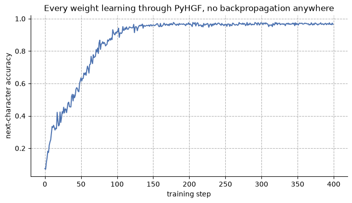
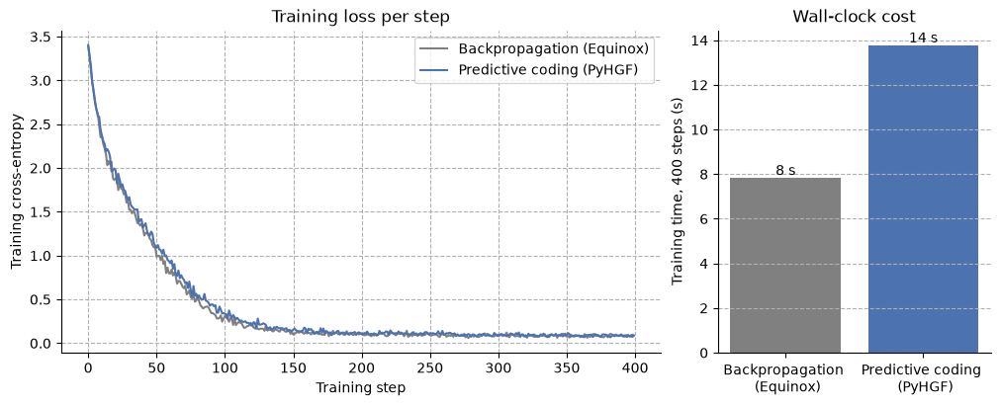

A Transformer, with and without backpropagation#
This notebook builds the smallest possible GPT-style Transformer in JAX/Equinox and trains it twice:
with ordinary backpropagation — the standard recipe (Adam + cross-entropy), kept as the baseline;
with PyHGF, and no backpropagation anywhere — every weight in the same architecture learns through PyHGF’s belief updating instead: each part predicts its output, receives a local prediction error, and adjusts its own weights from that error alone. No global backward sweep and no automatic differentiation run anywhere in training;
the two learners are then put side by side — learning per step and wall-clock cost — and both generate text.
The pipeline is deliberately minimal and self-contained: a char-level tokenizer (zero dependencies), a tiny GPT (2 layers, 64-dim, 4 heads), short training loops, and autoregressive text generation. Everything runs on CPU in a couple of minutes.
The PyHGF machinery comes from the toolbox. pyhgf.model.hybrid_from_gpt
assembles a mixed pipeline: a sequence of parts where each slot holds
either a frozen calculation (normalisation, the attention mixing — things
with nothing to learn, which only translate errors with hand-derived formulas)
or a learning PyHGF network. Walked forward, the pipeline predicts; walked
backward, each part learns locally and hands the error at its input to the
part behind it.
Two exact numerical claims underpin the comparison but are not re-derived
here: that the mixed pipeline computes the same function as the reference
model when they share weights, and that a PyHGF part learns exactly what
backpropagation would. Both are checked in tests/test_transformer.py
(test_full_model_forward_gate and test_ff_swap_matches_backprop); this
notebook takes them as given and focuses on the working models and the
comparison.
One clarification on the flavour of predictive coding used here: PyHGF’s scheme is single-sweep — predict once, correct beliefs once, nudge weights once per batch — not the textbook settle-to-equilibrium variant where beliefs relax through many iterations before any weight changes. The theory — and when the two learners provably coincide — is in the theory page; the pipeline machinery is described in the implementation page.
import time
import equinox as eqx
import jax
import jax.numpy as jnp
import matplotlib.pyplot as plt
import optax
import seaborn as sns
from jax import random
from pyhgf.model import (
DeepNetworkAdapter,
FusedPipeline,
from_embedding,
from_feedforward,
from_linear,
hybrid_from_gpt,
)
plt.rcParams["figure.constrained_layout.use"] = True
1. Data and tokenizer#
We use a character-level tokenizer: the vocabulary is simply the set of unique characters in the corpus. stoi/itos map characters to integer ids and back. This needs no external library and keeps the vocabulary tiny (a few dozen tokens), which is ideal for a minimal model.
The corpus is a short thematic text repeated a few times so the tiny model has enough sequence windows to learn a reproducible pattern.
corpus = (
"predictive coding networks learn by minimizing prediction errors. "
"each layer predicts the activity of the next, and updates its weights locally. "
) * 30
chars = sorted(set(corpus))
stoi = {c: i for i, c in enumerate(chars)}
itos = {i: c for c, i in stoi.items()}
vocab_size = len(chars)
encode = lambda s: jnp.array([stoi[c] for c in s], dtype=jnp.int32)
decode = lambda ids: "".join(itos[int(i)] for i in ids)
data = encode(corpus)
print(f"vocab_size = {vocab_size}, corpus length = {len(data)} tokens")
print(f"vocabulary: {''.join(chars)!r}")
vocab_size = 27, corpus length = 4350 tokens
vocabulary: ' ,.abcdefghiklmnoprstuvwxyz'
Batching#
Training examples are random windows of length T (the context length). For a window starting at i, the input is data[i:i+T] and the target is the same window shifted by one (data[i+1:i+T+1]) — i.e. predict the next token at every position.
T = 32 # context length
def get_batch(key, batch_size):
ix = random.randint(key, (batch_size,), 0, len(data) - T - 1)
windows = ix[:, None] + jnp.arange(T) # one gather, no Python loop
return data[windows], data[windows + 1]
xb, yb = get_batch(random.key(0), batch_size=4)
print("x:", xb.shape, "y:", yb.shape)
print("example input :", decode(xb[0]))
print("example target:", decode(yb[0]))
x: (4, 32) y: (4, 32)
example input : s locally. predictive coding net
example target: locally. predictive coding netw
2. The architecture#
A GPT is a feedforward stack (no recurrence): token+position embeddings, then L identical blocks, then a final norm and an unembedding head. Each block is two sub-layers, each wrapped in pre-norm + residual:
x -> x + Attention(LayerNorm(x)) # mixes information ACROSS positions
x -> x + FeedForward(LayerNorm(x)) # acts on each position INDEPENDENTLY
Following the Equinox convention, every module operates on a single sequence x of shape (T, D); we jax.vmap over the batch only at the loss. Per-token linear layers are applied with jax.vmap over the T axis.
PyHGF port note. Each
__call__below is a prediction function. In the PyHGF port (§4), the weight tables insideAttentionandFeedForwardbecome learning PyHGF networks predicting the next layer, while the weightless pieces (LayerNorm, the attention mixing, the residual junctions) become frozen parts that only translate errors.
Multi-head causal self-attention#
The only operation that moves information between token positions. The W_{Q,K,V,O} are learnable; the mixing matrix softmax(QKᵀ/√d) is computed from the data (no weights). The causal mask forbids attending to future positions.
class MultiHeadAttention(eqx.Module):
wq: eqx.nn.Linear
wk: eqx.nn.Linear
wv: eqx.nn.Linear
wo: eqx.nn.Linear
n_heads: int = eqx.field(static=True)
head_dim: int = eqx.field(static=True)
def __init__(self, dim, n_heads, key):
k1, k2, k3, k4 = random.split(key, 4)
self.wq = eqx.nn.Linear(dim, dim, use_bias=False, key=k1)
self.wk = eqx.nn.Linear(dim, dim, use_bias=False, key=k2)
self.wv = eqx.nn.Linear(dim, dim, use_bias=False, key=k3)
self.wo = eqx.nn.Linear(dim, dim, use_bias=False, key=k4)
self.n_heads = n_heads
self.head_dim = dim // n_heads
def __call__(self, x): # x: (T, D)
seq_len, dim = x.shape
q, k, v = jax.vmap(self.wq)(x), jax.vmap(self.wk)(x), jax.vmap(self.wv)(x)
# (T, D) -> (n_heads, T, head_dim)
split = lambda a: a.reshape(seq_len, self.n_heads, self.head_dim).transpose(1, 0, 2)
q, k, v = split(q), split(k), split(v)
scores = q @ k.transpose(0, 2, 1) / jnp.sqrt(self.head_dim) # (H, T, T)
mask = jnp.tril(jnp.ones((seq_len, seq_len)))
scores = jnp.where(mask[None] == 0, -jnp.inf, scores)
attn = jax.nn.softmax(scores, axis=-1)
out = (attn @ v).transpose(1, 0, 2).reshape(seq_len, dim) # back to (T, D)
return jax.vmap(self.wo)(out)
Feed-forward (per-position MLP)#
Linear(D -> 4D) -> GELU -> Linear(4D -> D), applied identically and independently to every position.
class FeedForward(eqx.Module):
fc1: eqx.nn.Linear
fc2: eqx.nn.Linear
def __init__(self, dim, hidden, key):
k1, k2 = random.split(key)
self.fc1 = eqx.nn.Linear(dim, hidden, key=k1)
self.fc2 = eqx.nn.Linear(hidden, dim, key=k2)
def __call__(self, x): # x: (T, D)
return jax.vmap(self.fc2)(jax.nn.gelu(jax.vmap(self.fc1)(x)))
Transformer block and full GPT#
Pre-norm + residual around each sub-layer, then stack L blocks between the embeddings and the unembedding head.
class Block(eqx.Module):
attn: MultiHeadAttention
ff: FeedForward
n1: eqx.nn.LayerNorm
n2: eqx.nn.LayerNorm
def __init__(self, dim, n_heads, hidden, key):
k1, k2 = random.split(key)
self.attn = MultiHeadAttention(dim, n_heads, k1)
self.ff = FeedForward(dim, hidden, k2)
self.n1 = eqx.nn.LayerNorm(dim)
self.n2 = eqx.nn.LayerNorm(dim)
def __call__(self, x): # x: (T, D)
x = x + self.attn(jax.vmap(self.n1)(x))
x = x + self.ff(jax.vmap(self.n2)(x))
return x
class GPT(eqx.Module):
tok_emb: eqx.nn.Embedding
pos_emb: eqx.nn.Embedding
blocks: list
norm_f: eqx.nn.LayerNorm
head: eqx.nn.Linear
context_length: int = eqx.field(static=True)
def __init__(self, vocab_size, dim, n_heads, hidden, n_layers, context_length, key):
keys = random.split(key, n_layers + 3)
self.tok_emb = eqx.nn.Embedding(vocab_size, dim, key=keys[0])
self.pos_emb = eqx.nn.Embedding(context_length, dim, key=keys[1])
self.blocks = [Block(dim, n_heads, hidden, keys[2 + i]) for i in range(n_layers)]
self.norm_f = eqx.nn.LayerNorm(dim)
self.head = eqx.nn.Linear(dim, vocab_size, use_bias=False, key=keys[-1])
self.context_length = context_length
def __call__(self, idx): # idx: (T,) int -> logits (T, vocab_size)
seq_len = idx.shape[0]
x = jax.vmap(self.tok_emb)(idx) + jax.vmap(self.pos_emb)(jnp.arange(seq_len))
for block in self.blocks:
x = block(x)
return jax.vmap(self.head)(jax.vmap(self.norm_f)(x))
DIM, HEADS, HIDDEN, LAYERS, BATCH = 64, 4, 128, 2, 16
reference = GPT(vocab_size, DIM, HEADS, HIDDEN, LAYERS, T, key=random.key(0))
n_params = sum(
x.size for x in jax.tree_util.tree_leaves(eqx.filter(reference, eqx.is_array))
)
print(f"number of parameters: {n_params:,}")
# sanity check: forward pass shape
logits = reference(data[:T])
print("logits shape:", logits.shape, "(T, vocab_size)")
number of parameters: 72,064
logits shape: (32, 27) (T, vocab_size)
3. Training with backpropagation#
Next-token prediction with cross-entropy loss and Adam. eqx.filter_value_and_grad differentiates only the array leaves (the weights), leaving the static config untouched. This loss.backward()-style global gradient — one backward sweep threading information from the loss through every layer — is precisely what the PyHGF port replaces with a local, layer-wise prediction-error rule.
This learner is the baseline the PyHGF model is set beside in §5; its losses and wall-clock time are recorded for that comparison. Its attribute layout (tok_emb, pos_emb, blocks[i].attn.wq …) is what hybrid_from_gpt reads when assembling the mixed pipeline.
def ce_loss(model, x, y):
logits = jax.vmap(model)(x) # (B, T, vocab_size)
return optax.softmax_cross_entropy_with_integer_labels(logits, y).mean()
optimizer = optax.adam(3e-3)
opt_state = optimizer.init(eqx.filter(reference, eqx.is_array))
@eqx.filter_jit
def backprop_step(model, opt_state, x, y):
loss, grads = eqx.filter_value_and_grad(ce_loss)(model, x, y)
updates, opt_state = optimizer.update(grads, opt_state)
return eqx.apply_updates(model, updates), opt_state, loss
N_STEPS = 400
key = random.key(1)
reference_losses = []
t0 = time.perf_counter()
for it in range(N_STEPS):
key, bk = random.split(key)
x, y = get_batch(bk, BATCH)
reference, opt_state, loss = backprop_step(reference, opt_state, x, y)
reference_losses.append(float(loss))
if it % 100 == 0 or it == N_STEPS - 1:
print(f"step {it:4d} | loss {float(loss):.4f}")
backprop_seconds = time.perf_counter() - t0
print(f"backpropagation: {N_STEPS} steps in {backprop_seconds:.0f} s")
step 0 | loss 3.4046
step 100 | loss 0.3124
step 200 | loss 0.1005
step 300 | loss 0.0807
step 399 | loss 0.0845
backpropagation: 400 steps in 8 s
4. The same Transformer, learning through PyHGF#
Now every weight in the model learns through PyHGF: the four attention tables of each block, the feed-forwards, both embedding tables (fed one-hot rows — a table lookup is a one-hot vector times the table), and the output head. Only the weightless calculations stay frozen: normalisations, the attention mixing, and the shortcut junctions, which translate errors with hand-derived formulas.
In the diagram, every weight table is a PyHGF learner (green) and every
weightless calculation is a frozen part (orange). A copy junction
splits a residual shortcut from its branch; an add junction merges them
back. hybrid_from_gpt assembles exactly this pipeline; the full walkthrough
is in the implementation page.
flowchart TB
IDS["token ids<br/>(batch, seq) integers"]
IDS --> TOK["token embedding<br/>one-hot · table → (·, 64)"]
IDS --> POS["position embedding<br/>one-hot · table → (·, 64)"]
TOK --> E0(("add"))
POS --> E0
E0 --> BIN["block input<br/>(batch, seq, 64)"]
subgraph BLOCK["one Transformer block — repeated ×2"]
direction TB
BIN2["input"] --> S1{"copy"}
S1 -->|shortcut| A1(("add"))
S1 -->|branch| LN1["LayerNorm n1"]
LN1 --> Q["Q table<br/>64→64"]
LN1 --> K["K table<br/>64→64"]
LN1 --> V["V table<br/>64→64"]
Q --> MIX["attention mixing — 4 heads<br/>scaled dot-product · causal mask<br/>softmax · blend values<br/>(no weights)"]
K --> MIX
V --> MIX
MIX --> O["O table<br/>64→64"]
O --> A1
A1 --> S2{"copy"}
S2 -->|shortcut| A2(("add"))
S2 -->|branch| LN2["LayerNorm n2"]
LN2 --> FF["feed-forward<br/>Linear 64→128 · GELU · Linear 128→64"]
FF --> A2
A2 --> BOUT["output"]
end
BIN --> BIN2
BOUT --> NF["final LayerNorm"]
NF --> HEAD["output head<br/>64→vocab · categorical softmax beliefs"]
HEAD --> ERR["cross-entropy error<br/>one_hot(target) − softmax<br/>(born at the output layer)"]
LG["learns via PyHGF"]
LF["frozen · hand-derived error"]
classDef learn fill:#cfe8cf,stroke:#2e7d32,color:#111;
classDef frozen fill:#fde9c8,stroke:#b26a00,color:#111;
class TOK,POS,Q,K,V,O,FF,HEAD,LG learn;
class LN1,MIX,LN2,NF,LF frozen;
The pinned-confidence configuration#
Every learning part keeps the same pinned-confidence configuration:
volatility levels frozen and high prior confidence (precision — a belief’s
inverse variance) on the hidden and input layers, so their beliefs barely move
during the update sweep (a silent interior; see the
theory page), with unit confidence on the
observed output layer. PARITY sets these values on every non-leaf layer,
PARITY_LEAF on the observed output layer; holding them fixed across batches
is what keeps the interior silent.
The learning rule#
The weights learn here in the exact backprop-parity mode
(learning_kind="precision_weighted", the adapter’s default): the hidden
layer’s belief shift is its routed error divided by its posterior
confidence, and the confidence-weighted update multiplies that same
confidence back in — the two cancel exactly, so each local update coincides
with the backpropagated gradient (the correspondence is derived in the
theory page). This makes the comparison with
the baseline as direct as possible: the two learners apply the same weight
updates and differ only in how they reach them — local message passing
against a global backward sweep.
The categorical head#
The head is a categorical belief layer: its nodes jointly represent
one softmax choice over the characters, so the model optimises exactly the
same cross-entropy objective as the baseline. Training clamps the truth —
“the next character is this one”, a one-hot pattern — directly onto those
beliefs, and the classification error arises from PyHGF’s own
prediction-error rule rather than being computed outside the model.
(Feeding probabilities - one_hot through the part contract clamps exactly
the one-hot pattern.) The head’s own update is
the plain cross-entropy gradient — the one_hot − softmax error times the
activity, exactly the backprop head’s. The head’s forward output is
already a probability distribution over the characters. A kind="binary"
head also exists — one independent yes/no belief per node — which is the
right choice for multi-label targets, not for a single N-way choice like this
one.
Each part carries its own local Adam optimiser — still no backpropagation: Adam only reshapes each part’s already-local updates. The whole training step — forward pass, the error at the head, all the local learning steps — runs as one compiled program per batch.
PARITY = dict(
volatility_parent=False,
tonic_volatility=-20.0,
precision=1e4,
expected_precision=1e4,
)
PARITY_LEAF = dict(volatility_parent=False, tonic_volatility=-20.0)
scratch = GPT(vocab_size, DIM, HEADS, HIDDEN, LAYERS, T, key=random.key(0))
def pyhgf_part(net):
# "precision_weighted" is the exact backprop-parity mode: each local update
# coincides with the backpropagated gradient.
return DeepNetworkAdapter(
net, optimizer=optax.adam(3e-3), learning_kind="precision_weighted"
)
pc_gpt = hybrid_from_gpt(
scratch,
attention_parts=[
{
name: pyhgf_part(
from_linear(
getattr(b.attn, name), leaf_kwargs=PARITY_LEAF, layer_kwargs=PARITY
)
)
for name in ("wq", "wk", "wv", "wo")
}
for b in scratch.blocks
],
ff_parts=[
pyhgf_part(
from_feedforward(
b.ff.fc1, b.ff.fc2, leaf_kwargs=PARITY_LEAF, layer_kwargs=PARITY
)
)
for b in scratch.blocks
],
head_part=pyhgf_part(
from_linear(
scratch.head,
leaf_kwargs=dict(kind="categorical", **PARITY_LEAF),
layer_kwargs=PARITY,
)
),
token_part=pyhgf_part(
from_embedding(scratch.tok_emb, leaf_kwargs=PARITY_LEAF, layer_kwargs=PARITY)
),
position_part=pyhgf_part(
from_embedding(scratch.pos_emb, leaf_kwargs=PARITY_LEAF, layer_kwargs=PARITY)
),
)
pc_pipeline = FusedPipeline(
pc_gpt,
# The cross-entropy error at the head, formed inside the compiled step:
# feeding probs - one_hot through the correct-and-clamp entry clamps
# exactly the one-hot truth on the beliefs.
error_fn=lambda probs, y: probs - jax.nn.one_hot(y, vocab_size),
)
# The timed loop does the same work as the backpropagation loop — draw a
# batch, take one step — and only stores each step's output; every metric
# is computed after the fact, below.
all_probs, all_targets = [], []
key = random.key(4)
t0 = time.perf_counter()
for it in range(N_STEPS):
key, bk = random.split(key)
x, y = get_batch(bk, BATCH)
probs, _ = pc_pipeline.step(x, y) # (B, T, vocab) — one softmax per position
all_probs.append(probs)
all_targets.append(y)
probs.block_until_ready() # flush the queued steps before stopping the clock
pyhgf_seconds = time.perf_counter() - t0
print(f"PyHGF: {N_STEPS} steps in {pyhgf_seconds:.0f} s")
# Metrics, after the fact. The head's output is a probability distribution,
# so its cross-entropy is directly comparable with the reference's.
all_probs, all_targets = jnp.stack(all_probs), jnp.stack(all_targets)
p_target = jnp.take_along_axis(all_probs, all_targets[..., None], axis=-1)
pc_losses = -jnp.log(jnp.clip(p_target, 1e-9, None)).mean(axis=(1, 2, 3))
accuracies = (all_probs.argmax(-1) == all_targets).mean(axis=(1, 2))
for it in (0, 100, 200, 300, N_STEPS - 1):
print(f"step {it:4d} | next-character accuracy {float(accuracies[it]):.2f}")
PyHGF: 400 steps in 14 s
step 0 | next-character accuracy 0.07
step 100 | next-character accuracy 0.92
step 200 | next-character accuracy 0.96
step 300 | next-character accuracy 0.97
step 399 | next-character accuracy 0.96
fig, ax = plt.subplots(figsize=(7, 4))
ax.plot(accuracies, color="#4c72b0", linewidth=1.5)
ax.set(
xlabel="training step",
ylabel="next-character accuracy",
title="Every weight learning through PyHGF, no backpropagation anywhere",
)
ax.grid(linestyle="--")
sns.despine()

5. Accuracy and execution time#
Both models trained for the same number of steps on batches drawn the same way, and both run as one compiled program per step, so their training curves and wall-clock times can be put side by side. With the categorical head, both learners optimise the same softmax cross-entropy, so the curves are directly comparable — and in the backprop-parity mode used here each local update coincides with the backpropagated gradient, while Adam acts element-wise, so one local Adam per part applies the same transformation as the single global Adam. The two runs still draw different random batch sequences, so the curves match statistically rather than point for point. Both timed loops include the one-off compilation of their step function.
fig, (ax1, ax2) = plt.subplots(
1, 2, figsize=(10, 4), gridspec_kw={"width_ratios": [2.2, 1]}
)
ax1.plot(reference_losses, label="Backpropagation (Equinox)", color="grey", linewidth=1.5)
ax1.plot(pc_losses, label="Predictive coding (PyHGF)", color="#4c72b0", linewidth=1.5)
ax1.set(
xlabel="Training step",
ylabel="Training cross-entropy",
title="Training loss per step",
)
ax1.grid(linestyle="--")
ax1.legend()
bars = ax2.bar(
["Backpropagation \n (Equinox)", "Predictive coding \n (PyHGF)"],
[backprop_seconds, pyhgf_seconds],
color=["grey", "#4c72b0"],
)
for bar, seconds in zip(bars, [backprop_seconds, pyhgf_seconds]):
ax2.annotate(
f"{seconds:.0f} s",
(bar.get_x() + bar.get_width() / 2, bar.get_height()),
ha="center", va="bottom",
)
ax2.set(ylabel=f"Training time, {N_STEPS} steps (s)", title="Wall-clock cost")
ax2.grid(axis="y", linestyle="--")
sns.despine()
fig.savefig("transformer_accuracy_time.png", dpi=150, bbox_inches="tight")
ms_backprop = backprop_seconds / N_STEPS * 1e3
ms_pyhgf = pyhgf_seconds / N_STEPS * 1e3
print(
f"time per step: backprop {ms_backprop:.1f} ms, "
f"PyHGF {ms_pyhgf:.1f} ms ({ms_pyhgf / ms_backprop:.1f}x)"
)
time per step: backprop 19.5 ms, PyHGF 34.4 ms (1.8x)

In terms of learning per step, the two are close: both collapse the loss within the first few hundred steps and flatten near the same floor. In terms of wall-clock, the predictive-coding learner stays within a small factor of backpropagation. Both run one compiled program per step; the remaining difference is PyHGF’s genuinely larger per-step computation — every belief carries a confidence that is predicted and corrected alongside it — not implementation overhead.
6. Generating text#
Autoregressive generation is an inference-time loop around the feedforward model: feed the current context (cropped to the context length), take the prediction at the last position, sample the next token, append, and repeat. This outer loop is not recurrence in the architecture — the model itself remains feedforward. Both learners generate the same way; the only difference is where the next-character distribution comes from. The backprop model outputs logits:
def generate_backprop(model, idx, n_new, key):
for _ in range(n_new):
logits = model(idx[-model.context_length:])[-1] # last-position logits
key, sub = random.split(key)
next_id = random.categorical(sub, logits).astype(jnp.int32)
idx = jnp.concatenate([idx, next_id[None]])
return idx
out = generate_backprop(reference, encode("predictive"), n_new=120, key=random.key(2))
print(decode(out))
predictive coding networks learn by minimizing prediction errors. each layer predicts the activity of the next, and updates its we
The PyHGF model’s forward pass already ends in a probability distribution over the characters (its categorical head), which is sampled from directly:
def generate_pyhgf(pipeline, idx, n_new, key):
for _ in range(n_new):
window = idx[-T:]
probs = pipeline.predict(window[None])[0] # forward pass only
p = probs[window.shape[0] - 1]
key, sub = random.split(key)
next_id = random.categorical(sub, jnp.log(p)).astype(jnp.int32)
idx = jnp.concatenate([idx, next_id[None]])
return idx
out = generate_pyhgf(pc_pipeline, encode("predictive"), n_new=120, key=random.key(5))
print(decode(out))
predictive coding networks learn by minimizing prediction errors. each layer predicts the activity of the next, and updates its we